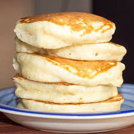

Pancakes

Description
Who doesn't love a good batch of pancakes. I certainly do, and I'd say you probably do too if you're looking at this recipe. With the many different styles, the various ways to serve it, and the comforting, nostalgic flavour of childhood, they're a simple yet great dish that many people enjoy.
Unfortunately, a lot of fluffy pancake recipes require buttermilk, and without it they end up more like a crepe. This recipe, however, uses ingredients that you'll probably have in your home to get the light, fluffy meal you want, without buttermilk.
Ingredients
- 1 cup all-purpose flour (sifted)
- 2 tsp baking powder
- Pinch of salt
- 2 tbsp white sugar
- 3/4 cup plus 2 tbsp milk
- 1 large egg (beaten)
- 2 tbsp unsalted butter (melted)
- 1 tsp pure vanilla extract
- Canola oil for cooking (or any other vegetable oil)
Instructions
- Combine flour, sugar, salt, and baking powder into a bowl and mix well.
- In a separate bowl, mix the egg, milk, vanilla, and melted butter together. Be careful not to use hot, melted butter, as that may end up cooking your eggs
- Pour the wet ingredient mixture into the dry ingredients and stir till mostly incorporated. The batter should be thick and a little lumpy, but without any visible streaks of flour. If it is too thick to work with, add a little milk. Set the batter aside for 5-10 minutes.
- Heat a heavy-bottomed, non-stick pan over a low-medium heat and coat it with oil. Use a ¼ cup measure to scoop and drop the batter into the pan so that you get evenly-sized pancakes.
- Cook until the first side is golden brown, or until the top surface forms bubbles. Flip and repeat on the other side. Adjust heat accordingly. Serve while still hot.